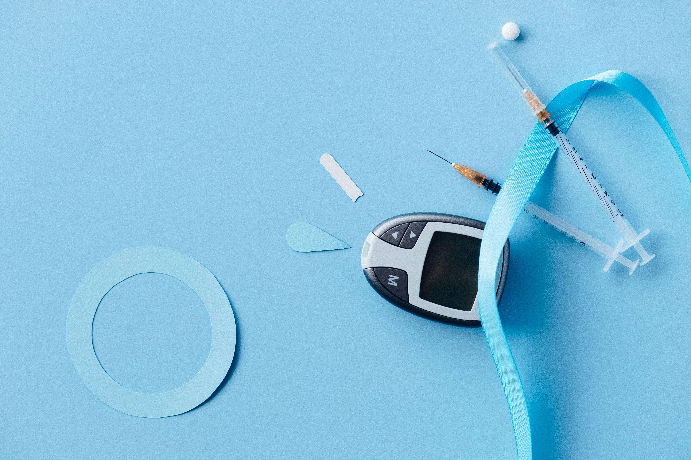
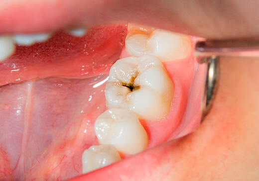
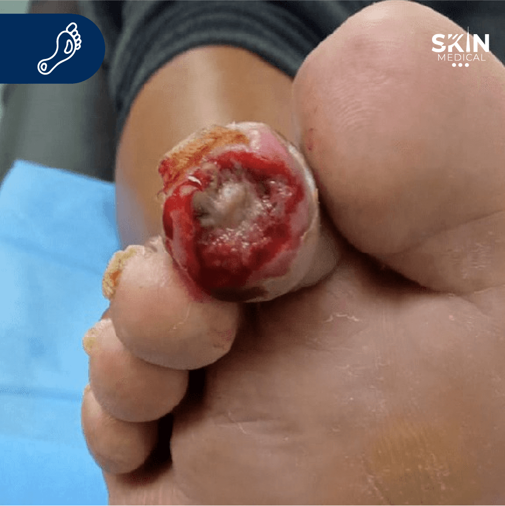

BIENVENIDO A GLUCOSABIO
Un espacio para aprender juntos a vivir bien con la diabetes y cuidar la salud en familia.
¿Por qué realizar este programa educativo?
Este programa busca brindar información clara, confiable y práctica para que pacientes y familias puedan comprender la diabetes, prevenir complicaciones y mejorar su calidad de vida.
Conoce tu enfermedad
En GlucoSabio encontrarás explicaciones sencillas sobre qué es la diabetes mellitus, sus causas, síntomas y factores de riesgo.
Aprende a controlarla
Aquí te enseñamos cómo llevar el control adecuado de la diabetes: medicación, monitoreo de glucosa, alimentación y ejercicio.
Evita complicaciones
Descubre qué puede pasar si la diabetes no se controla y cómo prevenir consecuencias graves como problemas en los ojos, riñones o corazón.
Uso glucómetro
Este video educativo busca fortalecer el conocimiento sobre el monitoreo de la glucosa, promoviendo el autocuidado y la participación activa en el tratamiento.
-
Herramienta educativa para el control de la diabetes
Brinda una guía visual sencilla y práctica que facilita el aprendizaje sobre el uso correcto del glucómetro
-
Promoviendo la autonomía del paciente
Motiva a los pacientes a tomar un rol activo en su cuidado diario, reforzando hábitos de control y prevención.
-
Apoyo visual para familias y cuidadores
También orienta a quienes acompañan al paciente, ofreciendo herramientas para brindar un apoyo más seguro y efectivo.
Prediabetes: Lo que necesitas saber
La prediabetes es una condición seria donde los niveles de azúcar en sangre son más altos de lo normal, pero no lo suficientemente altos para ser diagnosticados como diabetes tipo 2.
¿Qué es la Prediabetes?
La prediabetes significa que tienes niveles de azúcar en sangre más altos de lo normal, pero no lo suficientemente altos para ser diagnosticados como diabetes. Sin cambios en el estilo de vida, puede progresar a diabetes tipo 2.
Prevalencia
En Colombia, se estima que entre el 8% y el 10% de los adultos entre 20 y 79 años presentan prediabetes. Esto significa que, de cada 100 colombianos de estos grupos etarios, entre 8 y 10 podrían tener prediabetes.
Prevención
La buena noticia es que la prediabetes es reversible. Con cambios en el estilo de vida como una dieta saludable y ejercicio regular, puedes prevenir o retrasar la diabetes tipo 2.
Síntomas Comunes
La prediabetes generalmente no presenta síntomas. Algunas personas pueden experimentar:
- Sed excesiva
- Micción frecuente
- Fatiga
- Visión borrosa
Factores de Riesgo
Tienes mayor riesgo de prediabetes si:
- Tienes 45 años o más
- Tienes sobrepeso
- Tienes antecedentes familiares de diabetes
- Eres físicamente inactivo
- Has tenido diabetes gestacional
¿Qué es la diabetes?
La diabetes es una enfermedad crónica que aparece cuando el páncreas deja de producir insulina o el organismo no puede utilizarla eficazmente.
La insulina es una hormona fabricada por el páncreas que actúa como una llave para que la glucosa de los alimentos que ingerimos pase del torrente sanguíneo a las células del cuerpo para producir energía. El cuerpo descompone todos los alimentos ricos en carbohidratos en glucosa en la sangre, y la insulina ayuda a que la glucosa pase a las células.
Cuando el organismo no puede producir o utilizar la insulina de forma eficaz, se producen niveles elevados de glucosa en sangre, lo que se denomina hiperglucemia. A largo plazo, los niveles elevados de glucosa se asocian a daños en el organismo y fallos en diversos órganos y tejidos.
Diagnóstico
El diagnóstico de la diabetes se basa en pruebas específicas que permiten identificar niveles anormales de glucosa en la sangre. A continuación, se presentan los rangos establecidos para cada una de estas pruebas, que ayudan a determinar si una persona tiene un nivel normal de glucosa, se encuentra en un estado de prediabetes o ha desarrollado diabetes.
Valores de Diagnóstico
| Prueba | Normal | Prediabetes | Diabetes |
|---|---|---|---|
| Hemoglobina glicosilada | Menos de 5.7% | 5.7% a 6.4% | 6.5% o más |
| Glucosa en Ayunas | Menos de 100 mg/dL | 100 a 125 mg/dL | 126 mg/dL o más |
| Prueba de Tolerancia a la Glucosa | Menos de 140 mg/dL | 140 a 199 mg/dL | 200 mg/dL o más |
Hipoglicemia
Nivel bajo de glucosa en sangre (hipoglucemia)
Parte de vivir con diabetes son las fluctuaciones en los niveles de glucosa en sangre. Es fundamental saber cómo reconocer y tratar la hipoglucemia para mantener su seguridad y bienestar.
Lo que necesita saber sobre el nivel bajo de glucosa en sangre
Puntos clave
Umbral crítico
El nivel bajo de glucosa en sangre es cuando sus niveles caen por debajo de 70 mg/dL.
Regla 15/15
Utilice 15 g de carbohidratos de acción rápida y espere 15 minutos para tratar la hipoglucemia.
Acción inmediata
Es importante tratar los niveles bajos lo antes posible, ya que pueden volverse peligrosos rápidamente.
Emergencia médica
Un nivel grave de glucosa en sangre bajo es una emergencia y requerirá la ayuda de otros para tratarla.
Vida Saludable
Mantener un estilo de vida saludable es clave para el control y la prevención de complicaciones de la diabetes. En esta sección encontrarás recomendaciones prácticas sobre alimentación equilibrada y actividad física regular, adaptadas a las necesidades de personas con diabetes.
Alimentación
Una dieta equilibrada y planificada es fundamental para controlar los niveles de glucosa y mantener un peso saludable. Aprende sobre alimentos recomendados y porciones adecuadas.
Ejercicio
La actividad física regular ayuda a mejorar la sensibilidad a la insulina y el control glucémico. Descubre rutinas adaptadas a tus necesidades y condición física.
Medicamentos
El tratamiento farmacológico de la diabetes debe ser personalizado y supervisado por profesionales de la salud.
Existen diferentes tipos de medicamentos para el tratamiento de la diabetes, cada uno con mecanismos de acción específicos. La elección del tratamiento depende del tipo de diabetes, la edad del paciente, el estado de salud general y otros factores individuales.
Es fundamental seguir las indicaciones médicas al pie de la letra y mantener un control regular con el equipo de salud para ajustar el tratamiento según sea necesario y prevenir complicaciones.
Medicamentos Orales
Los antidiabéticos orales son medicamentos en forma de pastillas que ayudan a controlar los niveles de azúcar en sangre. Son comúnmente utilizados en diabetes tipo 2.
Medicamentos Inyectables
Incluyen insulina y otros medicamentos que se administran por vía subcutánea. Son esenciales para personas con diabetes tipo 1 y algunas con tipo 2.
Infografías
Así vivimos la experiencia de aprender sobre diabetes juntos
Complicaciones
Si no se controla adecuadamente, la diabetes puede causar graves complicaciones en el cuerpo.
Enfermedad cardiovascular
La diabetes puede afectar gravemente tu corazón y vasos sanguíneos.
Las personas con diabetes tienen mayor riesgo de sufrir enfermedades del corazón como infartos o accidentes cerebrovasculares. El exceso de glucosa daña las arterias, favoreciendo la acumulación de grasa en sus paredes. El control de la presión arterial, el colesterol y el azúcar es esencial para prevenir complicaciones cardiovasculares.
Complicaciones de los ojos
Altos niveles de glucosa pueden dañar los vasos sanguíneos de la retina, causando retinopatía diabética. Esta afección puede provocar visión borrosa, pérdida parcial o incluso ceguera. Un seguimiento oftalmológico regular ayuda a detectar y tratar a tiempo cualquier alteración visual asociada a la diabetes.
Enfermedad renal
Tus riñones también pueden verse afectados por la diabetes.
La nefropatía diabética es una complicación en la que los riñones pierden su capacidad para filtrar desechos. Esto ocurre cuando los niveles altos de glucosa dañan lentamente los vasos sanguíneos renales. La detección precoz y un buen control metabólico pueden evitar su progresión hacia la insuficiencia renal.
Enfermedad nerviosa
La neuropatía diabética es una afección que surge cuando la hiperglucemia daña los nervios, especialmente en las piernas y pies. Puede causar hormigueo, entumecimiento, debilidad o dolor. El buen control de la diabetes es clave para prevenir y aliviar los síntomas de esta complicación silenciosa pero seria.
Complicaciones orales
La salud bucal también se ve afectada por la diabetes mal controlada.
Las personas con diabetes tienen mayor riesgo de infecciones en las encías, sequedad bucal, mal aliento y pérdida de dientes. El exceso de glucosa favorece el crecimiento bacteriano y dificulta la cicatrización. Mantener una buena higiene oral y visitar al odontólogo con regularidad es fundamental.

Pie diabético
Una herida mal cuidada puede convertirse en una complicación grave.
El pie diabético combina daño nervioso y mala circulación, lo que reduce la sensibilidad y dificulta la cicatrización de heridas. Las lesiones menores pueden empeorar sin que la persona lo note, llevando a infecciones graves e incluso amputaciones. El cuidado diario de los pies es esencial para prevenirlo.

Preguntas frecuentes
Resuelve tus dudas más comunes sobre la diabetes
¿Qué es la diabetes?
La diabetes es una enfermedad que ocurre cuando el organismo es incapaz de generar insulina o utilizarla correctamente. El páncreas produce la insulina para regular el uso de la glucosa (azúcar) en el organismo.
¿Existen factores de riesgo de diabetes?
Sí. Algunos factores de riesgo son: antecedentes de familiares que padezcan o hayan padecido diabetes mellitus, sobrepeso y obesidad; enfermedad cardiovascular; grasas alteradas en sangre (dislipidemia); quistes en los ovarios; mujeres que haya tenido bebés con un peso mayor a 4 kilos y pacientes que, por enfermedad, tengan que usar tratamiento con esteroides o que tengan tratamiento de esquizofrenia.
¿Cuáles son los síntomas de la diabetes?
Algunos de ellos pueden ser:
• Aumento de sed
• Orinar más de lo habitual
• Cansancio y pérdida de peso
• Las heridas tardan en cerrar
• Comezón en genitales o frecuentes enfermedades por hongos
• Visión borrosa, náuseas o vómito
• Deseos de comer en grandes cantidades
• Coloración negruzca en cuello o codos
¿Cuántos tipos de diabetes hay?
Existen 3 tipos de diabetes, las cuales se denominan: Tipo I, Tipo II y Diabetes Gestacional (esta última ocurre durante el embarazo).
¿La diabetes se cura?
Lamentablemente no es curable, pero es posible controlarla con éxito y tener una buena calidad de vida si sigues el tratamiento que te indicó tu médico.
¿Qué tipo de dieta tengo que hacer, si padezco diabetes?
Debes tener una alimentación que ayude a mantener un nivel adecuado de azúcar en la sangre, puedes
acudir con un experto en nutrición para que te recomiende un plan alimenticio. Sobre todo debes:
• Evitar comer alimentos con altos contenidos de azúcar
• Comer porciones pequeñas a lo largo del día
• Prestar atención en la cantidad de azúcar (carbohidratos) que contiene cada alimento
• Puedes consumir una gran variedad de alimentos integrales, frutas y vegetales
• Comer menos grasas, limitar el consumo del alcohol y usar menos sal
¿Qué otro tipo de cuidados debo tener, si tengo diabetes?
• Ten cuidado especial con los pies, ya que esta parte del cuerpo es muy sensible a sufrir
deterioros cuando se tiene esta enfermedad; usa zapatos cómodos y calcetas que no te lastimen
• Lubrica bien tu piel con apoyo de cremas especiales
• Realiza ejercicio para oxigenar los músculos, mínimo 4 veces por semana; por ejemplo correr,
trotar, nadar, gimnasia, entre otros
• Hacer pesas no es adecuado, pero recuerda que toda actividad física debe estar supervisada por tu
médico para determinar tus limitaciones
¿Cómo puedo prevenir la diabetes?
La diabetes puede prevenirse con una alimentación correcta, actividad física regular, mantener un peso corporal adecuado, evitar el cigarro y moderar el consumo de bebidas alcohólicas.
¿Cuáles son las complicaciones de la diabetes?
Con el paso del tiempo se pueden presentar problemas en órganos y ciertas partes del cuerpo (riñones, pies y ojos, entre otros). Tener diabetes también puede aumentar el riesgo de tener enfermedades cardíacas y trastornos en los huesos y articulaciones. Otras complicaciones a largo plazo incluyen problemas con la piel, problemas en el aparato digestivo, disfunción sexual, problemas con dientes y encías. Las personas diabéticas también pueden tener urgencias médicas debido a los niveles muy altos o muy bajos de azúcar en la sangre. La causa puede ser una infección o reacción a algún medicamento. Si tienes náuseas, te siente cansado o tembloroso, busca atención médica de inmediato.
Test de riesgo
Una prueba rápida, fácil y confidencial para evaluar tu riesgo en solo unos minutos.
¿Conoces tu riesgo de Diabetes Tipo 2?
Una prueba rápida, fácil y confidencial para evaluar tu riesgo en solo unos minutos.
El test de FINDRISK te ayuda a saber si tienes riesgo de desarrollar diabetes tipo 2. Es rápido, sencillo y útil para cuidar tu salud. ¡Anímate a hacerlo!
Curso Interactivo de Diabetes
Explora este curso interactivo con videos educativos seleccionados para ti. Aprende qué es la diabetes, sus tipos, el uso correcto del glucómetro, valores normales, tratamiento, aplicación de insulina, Hipoglicemia y complicaciones como el pie diabético. Información clara, visual y confiable para cuidar mejor tu salud o la de tu familia.
Aprende a tu ritmo
Contenido estructurado y fácil de seguir
Videos educativos
Explicaciones claras y visuales
Información confiable
Contenido validado por profesionales
10 Módulos
Contenido completo dividido en módulos temáticos para un aprendizaje progresivo
1 Hora
Duración estimada para completar todo el curso a tu propio ritmo
Certificado
Obtén un certificado de finalización al completar todos los módulos
Opiniones
Aprender sobre la diabetes puede transformar la forma en que vives con ella. Estas opiniones son de personas que decidieron informarse, tomar el curso y sentirse más seguras en su camino hacia una vida más saludable.

Saul Goodman
Ceo & Founder
Proin iaculis purus consequat sem cure digni ssim donec porttitora entum suscipit rhoncus. Accusantium quam, ultricies eget id, aliquam eget nibh et. Maecen aliquam, risus at semper.

Sara Wilsson
Designer
Export tempor illum tamen malis malis eram quae irure esse labore quem cillum quid cillum eram malis quorum velit fore eram velit sunt aliqua noster fugiat irure amet legam anim culpa.

Jena Karlis
Store Owner
Enim nisi quem export duis labore cillum quae magna enim sint quorum nulla quem veniam duis minim tempor labore quem eram duis noster aute amet eram fore quis sint minim.

Matt Brandon
Freelancer
Fugiat enim eram quae cillum dolore dolor amet nulla culpa multos export minim fugiat minim velit minim dolor enim duis veniam ipsum anim magna sunt elit fore quem dolore labore illum veniam.

John Larson
Entrepreneur
Quis quorum aliqua sint quem legam fore sunt eram irure aliqua veniam tempor noster veniam enim culpa labore duis sunt culpa nulla illum cillum fugiat legam esse veniam culpa fore nisi cillum quid.
Galeria
Así vivimos la experiencia de aprender sobre diabetes juntos


Contacto
Centro de Salud Barzal - Tu bienestar es nuestra prioridad
Nuestra Ubicación
Cra. 36 #34a-15
Villavicencio, Meta
Colombia


{kind=link}
{kind=link}
{kind=link}